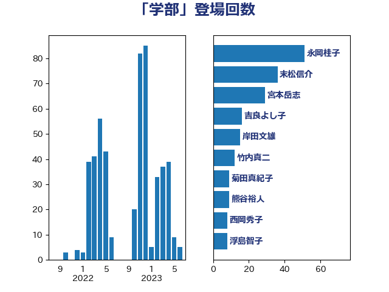

単語「学部」

| 永岡桂子 | 自由民主党 | 51 回 |
| 末松信介 | 自由民主党 | 36 回 |
| 宮本岳志 | 日本共産党 | 29 回 |
| 吉良よし子 | 日本共産党 | 16 回 |
| 岸田文雄 | 自由民主党 | 15 回 |
| 竹内真二 | 公明党 | 12 回 |
| 菊田真紀子 | 立憲民主党 | 9 回 |
| 熊谷裕人 | 立憲民主党 | 9 回 |
| 西岡秀子 | 国民民主党 | 8 回 |
| 浮島智子 | 公明党 | 8 回 |
| 上野通子 | 自由民主党 | 8 回 |
| 赤池誠章 | 自由民主党 | 7 回 |
| 舩後靖彦 | れいわ新選組 | 7 回 |
| 本田太郎 | 自由民主党 | 7 回 |
| 本村伸子 | 日本共産党 | 7 回 |
| 宮口治子 | 立憲民主党 | 7 回 |
| 大島敦 | 立憲民主党 | 7 回 |
| 堂故茂 | 自由民主党 | 7 回 |
| 古賀千景 | 立憲民主党 | 7 回 |
| 野田聖子 | 自由民主党 | 6 回 |
| 萩生田光一 | 自由民主党 | 5 回 |
| 玄葉光一郎 | 立憲民主党 | 5 回 |
| 吉川元 | 立憲民主党 | 5 回 |
| 緑川貴士 | 立憲民主党 | 4 回 |
| 渡辺創 | 立憲民主党 | 4 回 |
| 浅田均 | 日本維新の会 | 4 回 |
| 橋本岳 | 自由民主党 | 4 回 |
| 森山浩行 | 立憲民主党 | 4 回 |
| 木原稔 | 自由民主党 | 4 回 |
| 鰐淵洋子 | 公明党 | 3 回 |
| 進藤金日子 | 自由民主党 | 3 回 |
| 臼井正一 | 自由民主党 | 3 回 |
| 梅谷守 | 立憲民主党 | 3 回 |
| 松野博一 | 自由民主党 | 3 回 |
| 松沢成文 | 日本維新の会 | 3 回 |
| 住吉寛紀 | 日本維新の会 | 3 回 |
| 鶴保庸介 | 自由民主党 | 2 回 |
| 高木かおり | 日本維新の会 | 2 回 |
| 関芳弘 | 自由民主党 | 2 回 |
| 西村康稔 | 自由民主党 | 2 回 |
| 芳賀道也 | 国民民主党 | 2 回 |
| 笠浩史 | 無所属 | 2 回 |
| 竹内譲 | 公明党 | 2 回 |
| 空本誠喜 | 日本維新の会 | 2 回 |
| 石井準一 | 自由民主党 | 2 回 |
| 浜口誠 | 国民民主党 | 2 回 |
| 池田佳隆 | 自由民主党 | 2 回 |
| 櫻井周 | 立憲民主党 | 2 回 |
| 森屋宏 | 自由民主党 | 2 回 |
| 柴山昌彦 | 自由民主党 | 2 回 |
| 柚木道義 | 立憲民主党 | 2 回 |
| 杉久武 | 公明党 | 2 回 |
| 平林晃 | 公明党 | 2 回 |
| 山田宏 | 自由民主党 | 2 回 |
| 山口俊一 | 自由民主党 | 2 回 |
| 宮沢洋一 | 自由民主党 | 2 回 |
| 堀場幸子 | 日本維新の会 | 2 回 |
| 国光あやの | 自由民主党 | 2 回 |
| 五十嵐清 | 自由民主党 | 2 回 |
| 高見康裕 | 自由民主党 | 1 回 |
| 高橋克法 | 自由民主党 | 1 回 |
| 馬場成志 | 自由民主党 | 1 回 |
| 阿部司 | 日本維新の会 | 1 回 |
| 鈴木俊一 | 自由民主党 | 1 回 |
| 金城泰邦 | 公明党 | 1 回 |
| 菅直人 | 立憲民主党 | 1 回 |
| 秋野公造 | 公明党 | 1 回 |
| 福山哲郎 | 立憲民主党 | 1 回 |
| 石原正敬 | 自由民主党 | 1 回 |
| 石井啓一 | 公明党 | 1 回 |
| 田村貴昭 | 日本共産党 | 1 回 |
| 田村まみ | 国民民主党 | 1 回 |
| 猪口邦子 | 自由民主党 | 1 回 |
| 片山大介 | 日本維新の会 | 1 回 |
| 清水貴之 | 日本維新の会 | 1 回 |
| 河西宏一 | 公明党 | 1 回 |
| 沢田良 | 日本維新の会 | 1 回 |
| 早坂敦 | 日本維新の会 | 1 回 |
| 斎藤嘉隆 | 立憲民主党 | 1 回 |
| 山田勝彦 | 立憲民主党 | 1 回 |
| 山本順三 | 自由民主党 | 1 回 |
| 山崎正恭 | 公明党 | 1 回 |
| 小林鷹之 | 自由民主党 | 1 回 |
| 宮内秀樹 | 自由民主党 | 1 回 |
| 守島正 | 日本維新の会 | 1 回 |
| 塚田一郎 | 自由民主党 | 1 回 |
| 堤かなめ | 立憲民主党 | 1 回 |
| 古賀友一郎 | 自由民主党 | 1 回 |
| 加藤勝信 | 自由民主党 | 1 回 |
| 佐々木さやか | 公明党 | 1 回 |
| 伊藤忠彦 | 自由民主党 | 1 回 |
| 今井絵理子 | 自由民主党 | 1 回 |
| 仁木博文 | 無所属 | 1 回 |
| 中村裕之 | 自由民主党 | 1 回 |